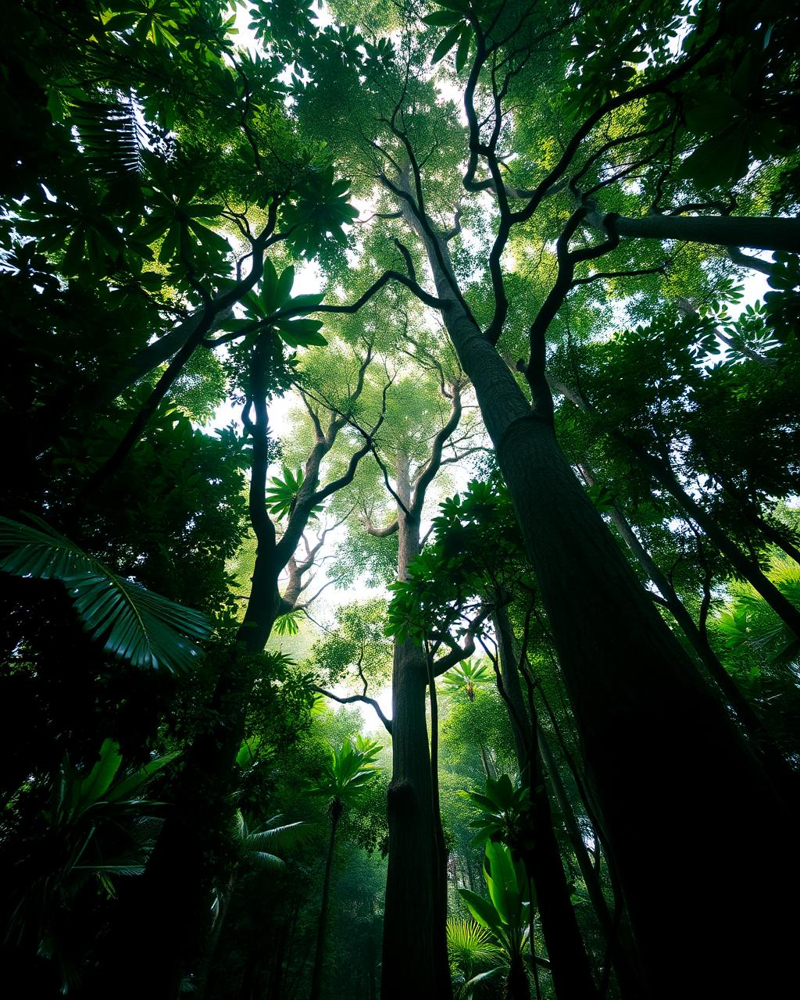
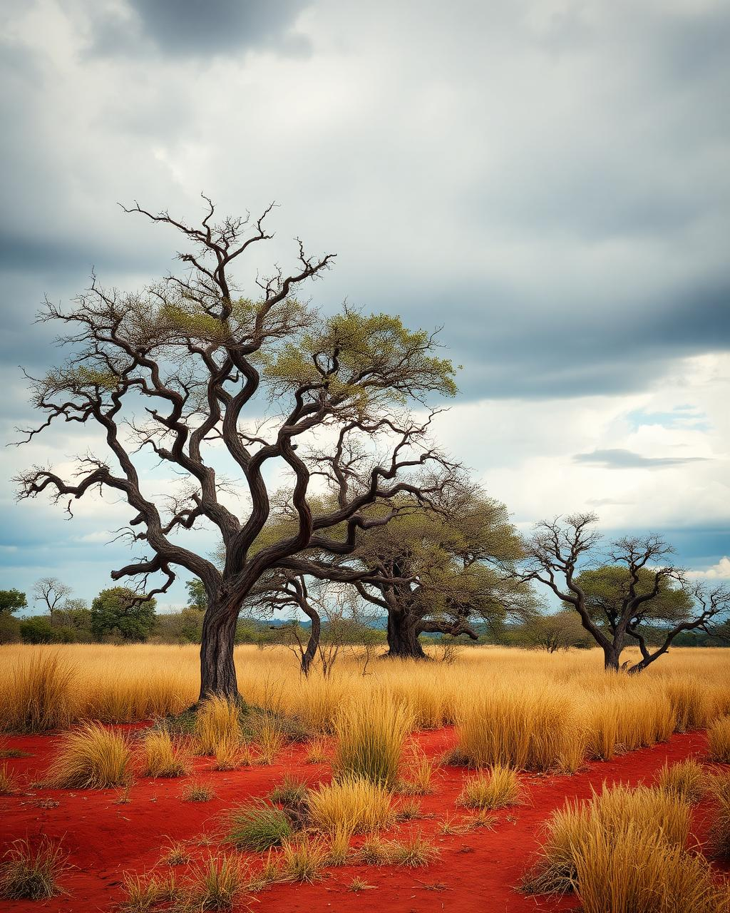
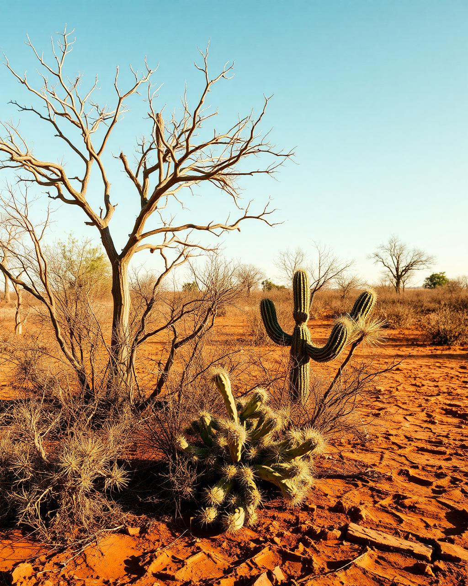
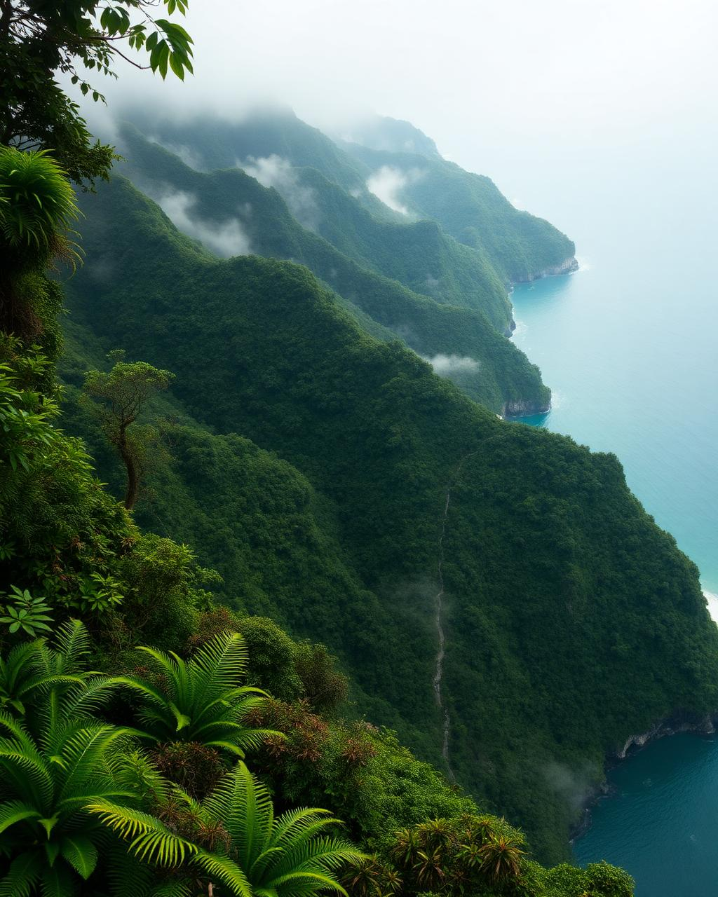

Explore os biomas, descubra espécies, acompanhe notícias ambientais e aprenda de forma interativa.
Quatro paisagens que explicam como o Brasil funciona por dentro.

BiomaCobre cerca de 49% do território brasileiro e abriga a maior diversidade biológica conhecida.
Explorar →
BiomaConhecido como o berço das águas, alimenta oito das doze bacias hidrográficas do país.
Explorar →
BiomaAdaptada à seca, a Caatinga floresce em poucas horas após a chuva. É o único bioma inteiramente brasileiro.
Explorar →
BiomaRestam cerca de 24% da cobertura original, mas ela ainda garante água para mais de 145 milhões de pessoas.
Explorar →Reportagens sobre desmatamento, clima, água e conservação em todo o país.
Cada bioma brasileiro tem seu próprio clima, solo, fauna e desafios de conservação.
Conheça nossos jogos e descubra a natureza brasileira de um jeito diferente. Quatro experiências pensadas para crianças, adolescentes e turmas escolares.
Explorar jogos →Seu guia digital para descobrir a natureza brasileira. O GiraBot é um assistente de conhecimento ambiental dedicado a florestas, biomas, fauna, flora, biodiversidade, desmatamento, queimadas e preservação no Brasil.
Olá! Eu sou o GiraBot. Pergunte sobre biomas, animais, plantas, florestas ou preservação.
Por que a Amazônia é tão importante?
Ela armazena bilhões de toneladas de carbono e produz os rios voadores, que levam chuva para boa parte da América do Sul.
O Gira Brasil nasceu em 2025 como um site informativo e evoluiu para uma plataforma interativa de jornalismo e educação ambiental.